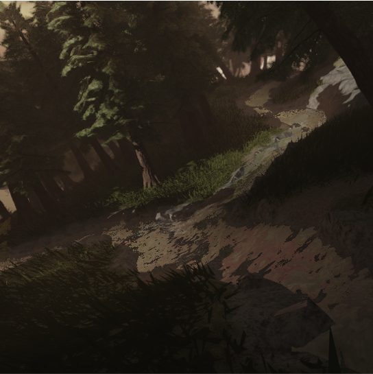
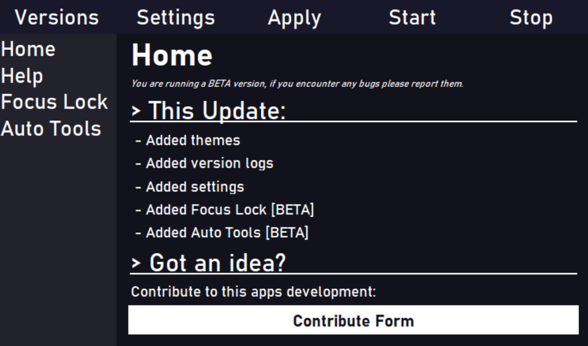
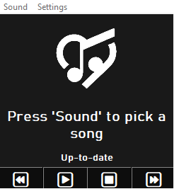
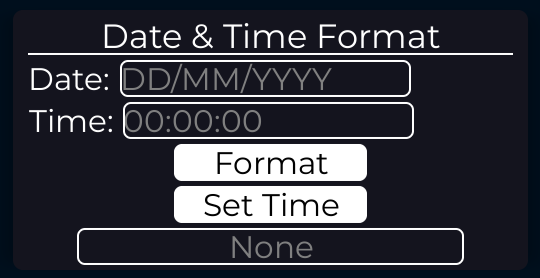
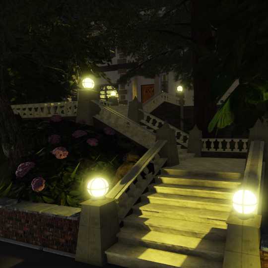
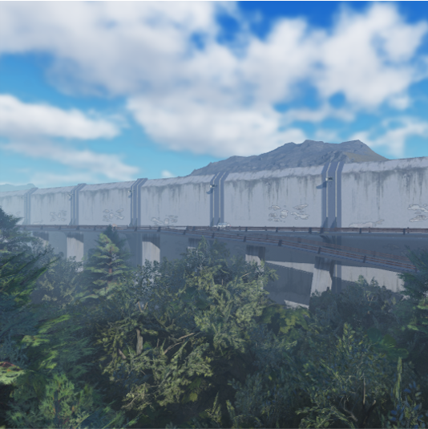

About Me
Hi! I'm Ben, a Year 12 student interested in technology, software development, game creation and web development. I enjoy learning new skills and techniques to help me in computing and playing around with new tech.
Currently I use Lua, Python, HTML, CSS & JavaScript, but aspire to branch out into languages such as C/C++ & C#.
3+
Years of coding
10+
Projects
∞
Curiosity
My Projects






These images showcase some of my personal projects, including both game and software development. All the projects shown were created independently and reflect my interests in building functional systems, interactive games and stylised UI.
The game environments showcased were designed in Roblox, while the Python tools focus on automation and maintainability.
My Hobbies
I enjoy exploring and discovering new technology and gaining experience in any newly acquired skills. In my spare time, you will find me scripting and building game projects, developing software, playing games or even working on new projects.
I actively help out the Head of Computing at my school by building and designing computing activities as well as assisting younger students on how to program in Python. I've also contributed to my parish's website to help develop their cafe page, to showcase the building, people and history of the place.
I aspire to continue on my journey, discover new challenges to pursue and expand my knowledge.
Current Education
I am currently studying these A-Levels:
- • Computer Science
- • Mathematics
- • Geography
These subjects have helped me to develop problem solving skills, technical thinking and knowledge.
Related GCSE Results:
- • Computer Science - Grade 8
- • Mathematics - Grade 7
- • Geography - Grade 6